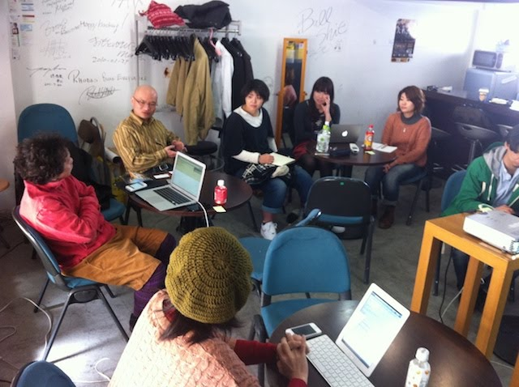
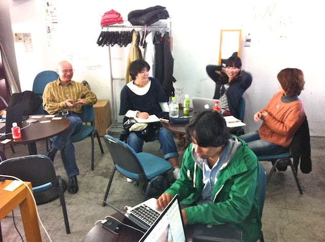

|
2012年4月7日（土） 13:30開始 17時終了 AIP Cafe


◎おすすめアプリ教えてください（mac,win,iphone,android問わず） by いちえさんSpirited Away（drikin.com) 使用していないソフトを自動的に隠してくれるソフト MAMP Pro shadow(adobe) モバイルサイトのデバッグに便利。 default folder(mac) フォルダーを便利にする。 launchbar ランチャーソフト 1password パスワード管理 TuneIn Radio(iPhone apps) ネットラジオアプリ。録音機能がすごい。85円 Sleep Cycle めざましアプリ。レム睡眠時を見計らって起こしてくれる。 Colorblind Vision 色盲を擬似体験できるアプリ。 Eight クラウド名刺管理アプリ ◎福岡にあったらいいな、と思うものは？by いちえさん
▼意外と喜ばれる
◎デザインが思いつかない時の対処法どうしてる？by 松本さん
◎カンプデザインって必要なの？
◎Web業界での就活について知りたいby yukkyさん就活中。みなさんはどうやって就職したの？
◎ブログサービスより自前ブログ？by 徳永さんブログサービス→コスト面で◎ プロモーションしたい時。バックリンク。SEOではない集客の機能。 アクセスが集中した時には良い。 WordPress→いろいろできる人なら◎（習得コストの問題だけ）WordPressのSEOプラグインで良いのがあるよ（by taikikenさん）→Yoast ◎ディレクトリかサブドメインか？関連するものならサブドメインがいい。内容次第。◎SASS,CDN使ってる人どうですか？by taikikenさんSASS
} } .border1{ @include rounded(10px); } .test{ background-color: #aaa; & hover { } } ============= CDN クラウドフロント。 ◎future syncの告知by mutsuking5/19に九産大で開催予定。そのうち告知サイト公開。
◎ふくおか かつぎて けいかくふくおか かつぎて けいかく 福岡版プロボノ 技術でNPOの自立支援。周囲に広めてくれるとうれしいな。◎便利グッズ自慢by 我流
終了後は大花見に合流しました。 参加者（ちなみに途中まで女子率50%）
|
レポート >